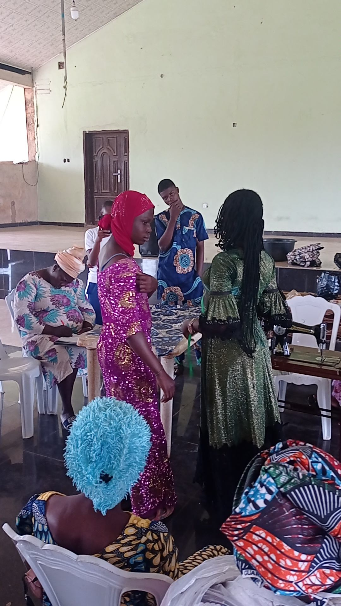
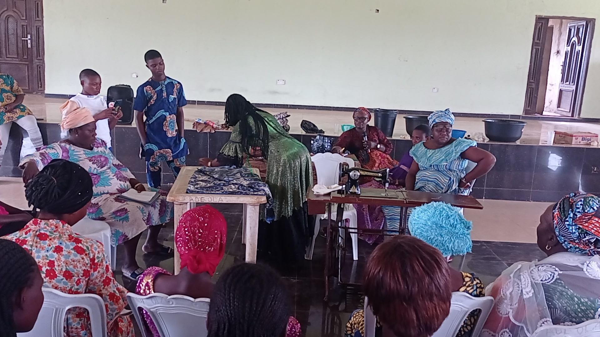
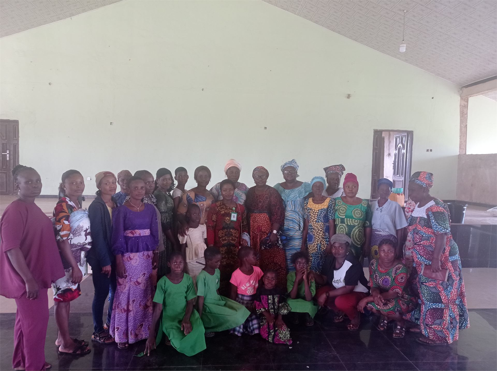
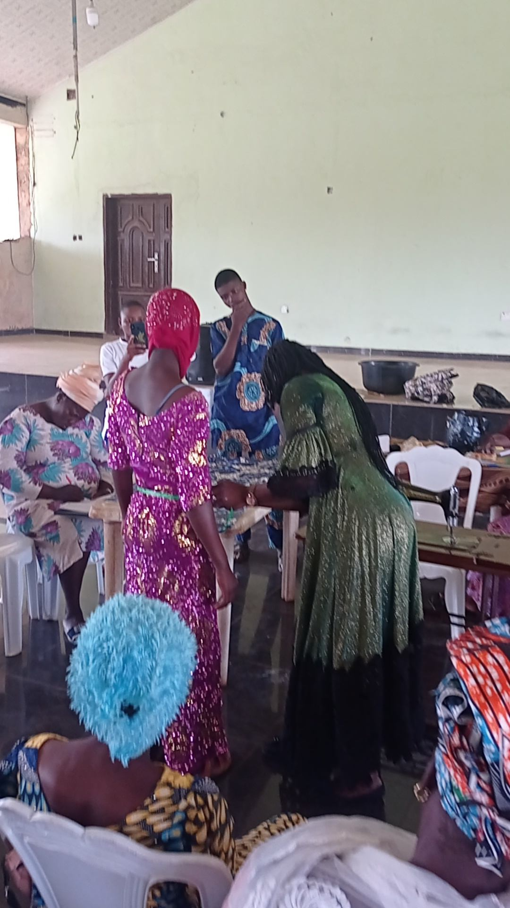
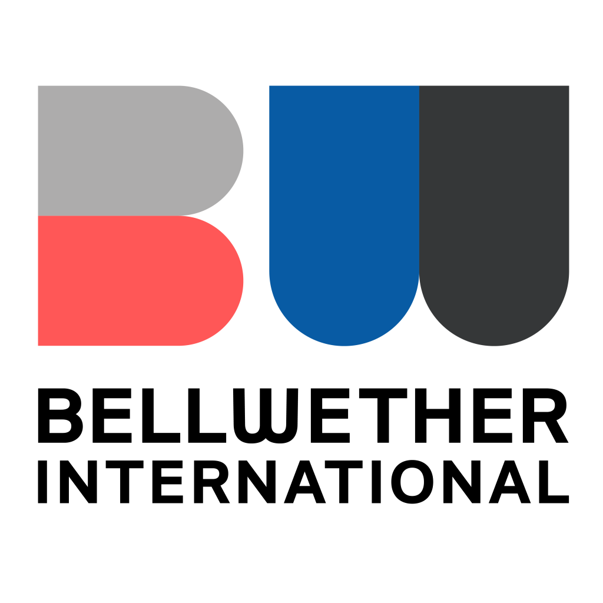
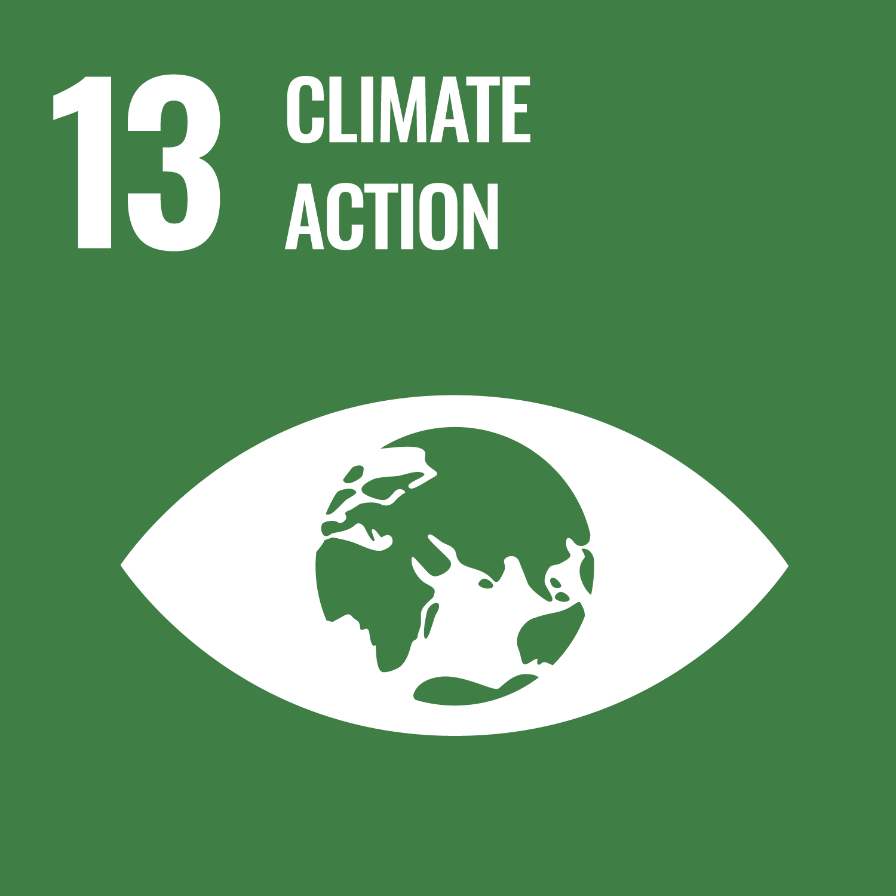

Green Skills for Women and Underserved Communities
We train women and underserved groups in practical green skills that can support income generation and self-reliance.
JullyConsult Hub
A green empowerment initiative helping women build practical circular economy skills, income pathways, and enterprise confidence.
Through reuse, upcycling, and sustainable product development, the project helps women transform waste into useful products, build confidence, and create dignified livelihood opportunities.
About the Project
Women Green Empowerment was created to support women who face unemployment, poverty, limited access to finance, and exclusion from economic opportunities. The project provides practical circular economy training that enables women to turn waste materials into valuable products.
Through this initiative, participants learn how to reuse, upcycle, and produce eco-friendly items while gaining basic enterprise knowledge. The project strengthens women's confidence, supports income generation, and promotes climate-conscious community development.
Women Green Empowerment positions women as creators, problem-solvers, entrepreneurs, and leaders in local green value chains.

Project Focus
Women Green Empowerment supports women with hands-on training in reuse, product development, and sustainable production, while strengthening their access to dignified livelihood opportunities.

We train women and underserved groups in practical green skills that can support income generation and self-reliance.

Participants transform textile waste, plastic materials, and reusable items into bags, reusable pads, accessories, and household items.

The project introduces pricing, quality improvement, customer relations, savings, teamwork, and local market access.

Why This Project Matters
Many women in underserved communities have creativity, strength, and willingness to work but lack access to skills, tools, mentorship, and livelihood opportunities. At the same time, communities continue to face growing environmental challenges caused by textile and plastic waste.
Women Green Empowerment responds to both problems by turning waste into opportunity. It helps women gain practical skills, produce sustainable items, earn income, and contribute to cleaner communities.
By investing in women's green skills, the project promotes economic inclusion, climate action, household resilience, and community development.
Key Activities
We provide hands-on training in reuse, recycling, upcycling, and sustainable production.
Participants learn to create practical and marketable products from textile and plastic waste.
We introduce pricing, record keeping, branding, packaging, and customer engagement.
The project helps women build self-esteem, decision-making ability, and leadership confidence.
Participants learn how waste reduction, reuse, and circular production can protect the environment.
We support women with mentorship, product improvement guidance, and connections to local buyers and support networks.
Stories of Change
For many participants, Women Green Empowerment becomes a turning point. Women who once saw waste as useless begin to see it as a source of creativity, income, and community value.
Through the project, participants gain practical skills, discover their strengths, and build confidence to start small businesses or support their families. The initiative also encourages women to become climate champions in their communities by promoting reuse and responsible production.
"This training helped me understand that I can create something valuable with my hands. I now have a skill that can help me earn income and support my family."
Our Partner

Women Green Empowerment is supported in partnership with Bellwether International, helping JullyConsult expand women-led green skills, circular economy training, and livelihood opportunities in underserved communities.
Through this partnership, more women are equipped with practical tools to build confidence, create sustainable products, and participate in local green enterprise development.
SDG Alignment
 SDG 1: No Poverty
SDG 1: No PovertyHelping women gain skills that can support income generation.
 SDG 5: Gender Equality
SDG 5: Gender EqualityEmpowering women and girls with practical skills and confidence.
 SDG 8: Decent Work
SDG 8: Decent WorkSupporting sustainable livelihoods and enterprise readiness.
 SDG 10: Reduced Inequalities
SDG 10: Reduced InequalitiesReaching underserved women and vulnerable groups.
 SDG 12: Responsible Production
SDG 12: Responsible ProductionPromoting reuse, upcycling, and circular production.

SDG 13: Climate ActionReducing waste pollution and encouraging community climate solutions.
Project Gallery
Training moments, product-making activities, finished reusable products, and women-led green enterprise outputs.


Call to Action
JullyConsult is committed to expanding Women Green Empowerment to reach more women, girls, and underserved communities. With your support, we can provide more training materials, tools, mentorship, product development support, and market linkages for women-led green livelihoods.
Contact
Use this form to register interest in supporting Women Green Empowerment or buying products from women-led green enterprises.